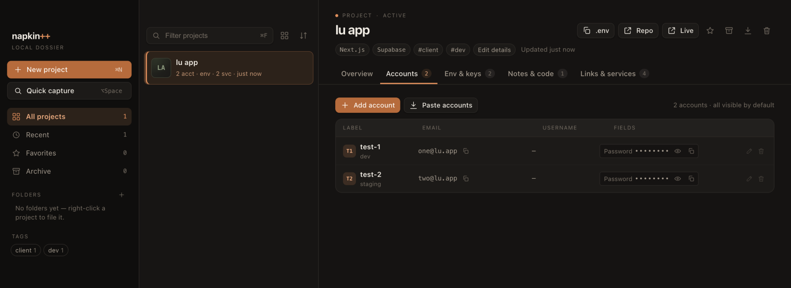

01 / accounts
test users are not a dropdown.
a project usually has more than one login: test-1, test-2, a client's staging account, the admin you made at 2am. napkin++ shows them all at once, each with typed fields — password, pin, api token, recovery code — instead of one fixed password column.
- masked by default. reveal one field, copy it in a click.
- searchable from the palette, values included.
- redacted in markdown export by default.
